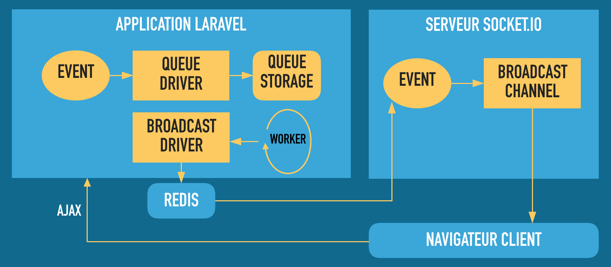

- AFUP Lyon / Retour d’expérience sur les WebSockets avec Laravel 5.3
- AFUP Lyon / Retour d’expérience sur les WebSockets avec Laravel 5.3
Utilisation des WebSockets avec Laravel 5.3
AFUP Lyon /
Qui suis-je ?
Consultant indépendant
Développements d'application, de sites, constitution d'équipes, accompagnement, méthodes agiles...
Les 10 prochaines minutes...
- WebSockets ?
- Laravel ?
- Et concrètement ça donne quoi ?

WebSockets ?
Protocole de communication
Implémentation
- Côté client (navigateur) :
- API JavaScript pour envoyer recevoir des messages
- Bien supporté aujourd'hui:
- IE10+, Edge, Firefox, Chrome, Safari, Opera...
- Et sur mobile aussi, seul mauvais élève : Opera Mini
- Côté serveur :
- Programme d'écoute pour le handshake
- Programme d'écoute / réponse de messages
Ne pas réinventer la roue...
Socket.io
- Solution Open Source ;
- Propose une implémentation client et serveur ;
- Gère un fallback en long polling Ajax ;
- Outil solide et maintenu par une grande communauté ;
- Développé en JavaScript.

Laravel ?
The PHP Framework For Web Artisans
- Framework PHP créé par Taylor Otwell en 2011
- Développement d'applications web en utilisant MVC
- Basé sur le module HTTPKernel de Symfony 2
- Eloquent ORM : ActiveRecord pour la base de données
Version 5.3 ?
La promesse de Laravel Echo
Apporte la puissance des WebSockets
dans votre application sans la complexité !
Et concrètement ça donne quoi ?
Implémentation dans le code PHP
- Création d'un objet
Event; - Implémentation de l'interface :
ShouldBroadcast; - Envoi des évenements vers le client avec la fonction
broadcast.
Super facile 👍
Exemple dans un contrôleur
<?php
namespace App\Http\Controllers;
use Illuminate\Http\Request;
use App\Event\UserMessageCreated;
class UserController extends Controller
{
public function createMessage(Request $request)
{
$message = new App\Message($request->all());
$message->save();
broadcast(new UserMessageCreated($request->user(), $message));
}
}
<?php
namespace App\Events;
use Illuminate\Queue\SerializesModels;
use Illuminate\Contracts\Broadcasting\ShouldBroadcast;
class UserMessageCreated implements ShouldBroadcast
{
use SerializesModels;
public $user;
public $message;
public function __construct(App\User $user, App\Message $message)
{
$this->user = $user;
$this->message = $message;
}
public function broadcastOn()
{
return new PrivateChannel('user.'.$this->user->id);
}
}
Sauf que...
- Les évenements émis sont placés dans une file d'attente (queue).
- Il faut choisir son driver: BDD, Redis, SQS, Beanstalk...
- Heureusement, par défaut c'est
syncmais attention à l'impact sur les temps de réponse de l'application.
Sauf que...
- Il faut aussi un driver de broadcast :
- Pusher, Redis, Log, Null
- Pusher ? C'est le seul driver de WebSocket !!
- Et c'est un service SAAS payant...
- Heureusement, Redis sert de passerelle vers d'autres solutions...
Pour une implémentation locale
- Pas de solution en PHP pour l'instant...
- Obligé de passer par un serveur de WebSocket en JavaScript :
- tlaverdure/laravel-echo-server
- Lit les informations passées dans Redis pour les envoyer au client.
⚠ Pas de communication Client → Serveur possible
Schéma d'architecture
⚠ Le socle technique devient complexe et demande des compétences variées pour être maintenue correctement.
Et en front ?
- Taylor Otwell a publié un client JavaScript spécifique : laravel/echo
- Code simple et accessible pour écouter et réagir aux évènements ;
- Approche similaire à l'API native WebSocket ;
- Packagé par défaut avec le client
Pusher... - Pour le moment d'une stabilité relative en n'utilisant pas Pusher.
- J'ai été obligé de forcer une version particulière plus ancienne pour que ça fonctionne.
Bilan
- L'application fonctionne aujourd'hui correctement ;
- L'utilisation d'AJAX pour les messages Client → Serveur n'est pas idéal ;
- L'implémentation est un peu jeune pour le moment ;
- L'installation et la maintenance sont beaucoup plus complexes que prévu.
Questions ?
http://shulard.github.io/talks/afup-lyon-lighting-décembre-2016